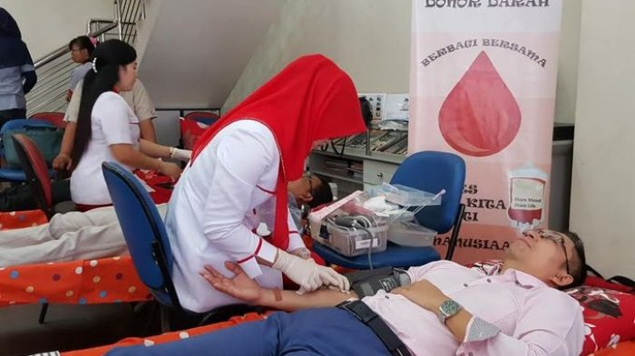

Persiapan yang Harus Dilakukan Sebelum Donor Darah

Yang harus Anda persiapkan sebelum donor darah
Saat donor darah, volume darah Anda akan menurun. Konsumsi banyak cairan sehari sebelum donor darah terutama jika cuacanya panas.
Anda bisa mengonsumsi makanan asin kira-kira 12 jam sebelum mendonorkan darah karena setelah darah Anda diambil, Anda kehilangan kurang-lebih 3 gram garam dari tubuh.
Cukupi kebutuhan besi harian Anda, konsumsi makanan yang mengandung besi seperti daging sapi, ikan, dan bayam.
Tidur yang cukup, minimal 4 jam sebelum mendonorkan darah.
Pastikan Anda mencatat jenis obat-obatan yang Anda gunakan sebelum mendonorkan darah.
3 jam sebelum mendonorkan darah, Anda disarankan untuk minum banyak air atau jus buah.
Makan yang cukup 3-4 jam sebelum donor untuk menghindarkan Anda dari rasa lemas.
Yang harus Anda persiapkan saat donor darah
Gunakan pakaian yang tidak terlalu ketat sehingga memudahkan proses pengambilan darah.
Jika Anda sudah biasa mendonorkan darah, Anda mungkin memiliki lengan yang lebih mudah untuk dicari pembuluh darahnya, Anda bisa informasikan hal tersebut kepada petugas donor.
Jangan terlalu tegang, Anda dapat mendengarkan musik, membaca, atau mengobrol dengan sesama pendonor.
Yang harus Anda persiapkan setelah donor darah
Beristirahatlah setidaknya 10-15 menit setelah selesai mendonorkan darah. Anda bisa mengonsumsi makanan yang disediakan oleh petugas donor.
Untuk menghindari bengkak di bekas tusukan jarum, hindari mengangkat beban berat setidaknya selama 12 jam setelah donor.
Perbanyak minum air putih terutama 3 hari setelah mendonorkan darah.
Hindari merokok.
Hindari olahraga berat setidaknya 6 jam setelah mendonorkan darah.
Jangan terlalu lama berdiri dan terkena panas terutama 6 jam setelah Anda mendonorkan darah.
Hindari alkohol.
Informasikan kepada petugas donor jika Anda mengalami gangguan kesehatan setelah mendonorkan darah.